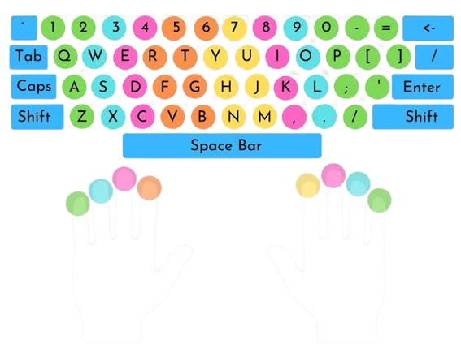

• INSTRUCTIONS
•Typing seeko is a game where you can check your typing speed like WPM (Word Per Minute), CPM (Character Per Minute), Accuracy, etc. In my Typing Seeko,the min time for typing is 60 seconds and max time for typing is 100 seconds. Once you start typing, you'll see your time, mistakes, WPM, and CPM at the bottom.
•You can also erase your incorrect characters or go backward by pressing the backspace key of your keyboard. Once you have typed all characters or the time is completed, you can click on the Reset button to reset the result and load a new paragraph.
• FOLLOW THE BELOW CHAT BOARD AND START YOUR LEARNING
KEY BOARD FINGER PLACEMENT
©️2025 Typing seeko.All rights reserved.